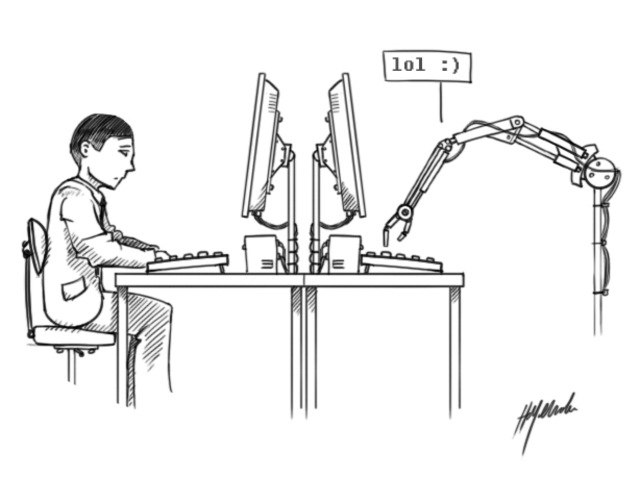

En general un sistema interactivo es diseñado conforme a los requerimientos de los usuarios, puesto que durante todas las fases de desarrollo del sistema se obtiene información relevante que permite diseñar una interfaz cercana a sus capacidades físicas, cognitivas, a sus gustos y expectativas. (Galeano, 2008). Todos los días realizamos múltiples actividades como por ejemplo: tomar el transporte para ir a trabajar, vestirse, desayunar, ir al cine, etc. Finalmente todas son tareas realizadas por un individuo, para abordar este tema al individuo lo llamaremos “usuario” y las actividades que realiza les llamaremos “tareas”. Para lograr tener claros los requerimientos del usuario, es necesario que se tenga claro la tareas que él lleva a cabo, para eso se necesita especificar dicha tarea en un modelo.
Arteaga, J. M., Amador, V. B., & Chavarría, A. A. Diseño de la Interación Humano-Computadora. Temas de diseño en Interacción Humano-Computadora 1a ed.-Iniciativa Latinoamericana de Libros de Texto Abiertos (LATIn), 2014. 249 pag., 29.

imagen toma de: https://www.timetoast.com/timelines/ingenieria-en-tic-s-interaccion-humano-computadora-ihc-historia-de-la-ihc-edgar-paul-ramirez-villasenor-no-control-15400801